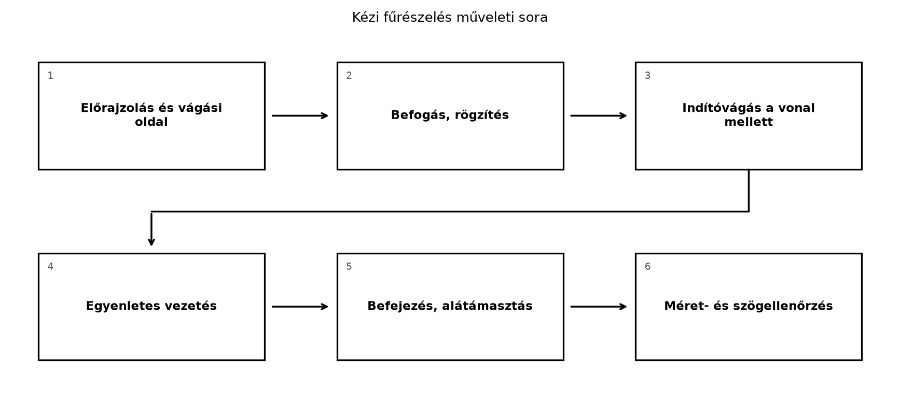

Amikor a műhelyben egy alkatrészről csak néhány millimétert kell levágni, egy csapvállat kell utólag igazítani, vagy nincs áram a munkahelyen, a kézi fűrész a leggyorsabb és legbiztonságosabb megoldás. Aki kézi fűrésszel sem tud pontosan a vonal mellett vágni, az géppel sem fogja időben észrevenni, ha a munkadarab elhúz vagy a vágás ferde lesz. Ebben az alfejezetben a kézi fűrészek fajtáit, fogazatát, élezését és a fűrészelés technológiáját tanulod meg.
Képzeld el: a gyalupadon egy 22 mm vastag tölgyfa léc fekszik, rajta éles rajzvonal. A bal kezed a lécet szorítja a padhoz, a jobb kezed csapozó fűrésszel közvetlenül a vonal mellett, a hulladékoldalon indít (a vonal megmarad). A fűrészlapot először hátrafelé húzod, majd előretolod. Vékony fapor hullik a padra. A fűrész előre-hátra jár, a vágás követi a vonalat, a vágás végén a hulladékdarab halkan leesik. Ez a kép a kézi fűrészelés rendje: előrajzolás, befogás, indítás, vezetett vágás, ellenőrzés.
Definíció. A kézi fűrész olyan forgácsoló szerszám, amelynek lapján egymás után sorakozó fogak vékony, fűrészpor alakú forgácsot választanak le. A fűrész fogai a fa rostjait elvágják vagy elhasítják, a vágási résben pedig a lap hátrahúzható, így a vágás folyamatos.
A fűrészlapnak négy fontos jellemzője van: a fogosztás, a fogszögek, a fogalak és a terpesztés.
Definíció. A fogosztás () két szomszédos fogcsúcs közötti távolság mm-ben. A kereskedelemben a fűrészlapok fogsűrűségét gyakran hüvelykenkénti fogszámként (TPI, 1 hüvelyk = 25,4 mm) tüntetik fel. Ezt metrikusan így váltjuk át: ; a könyvben a fogosztást mm-ben () adjuk meg, a számításokban a kényelmes 25 mm-es kerekítést használjuk (ellenőrizendő: gyártói jelölés; a TPI és a PPI, a csúcsok száma, eltérhet eggyel).
Összefüggés. Ha 25 mm-en darab fog van, akkor a fogosztás:
Számítás. Egy finom csapozó fűrészlap 25 mm-en 10 fogat tartalmaz. Mekkora a fogosztása?
Ellenőrzés: minél nagyobb a fogszám, annál kisebb a fogosztás. A 2–3 mm-es osztás valóban finom, kötésvágáshoz való.
A fűrészfog szögeit a A forgácsolás alapjai: szerszámél, szögek, mozgások és forgácsképződés alfejezetben tanult módon értelmezzük: homlokszög , ékszög , hátszög , és . A pontos szögek fűrészenként és gyártónként eltérnek, ezért az itt megadott tartományok tájékoztató jellegűek (ellenőrizendő: gyártói adatlap).
A kézi fűrészek fogazata két fő csoportra oszlik.
Definíció. A hasító fogazat a fa rostjaival párhuzamos, azaz rostirányú vágásra való. A fog homlokfelülete közel merőleges a vágásirányra, ezért vésőszerűen hasítja a rostokat. A homlokszög kicsi, az ékszög nagyobb. A hasító fűrész fogai gyakran kagylószerűek, és a fogak a lap síkjában, egyenes éllel dolgoznak.
Definíció. A daraboló fogazat a rostokra merőleges vagy ferdén keresztbe futó vágásra való. A fogak élei oldalról ferde, késszerű élben futnak össze, ezért a rostokat elvágják, nem szakítják. A homlokszög negatív, kisebb, mint a hasító fognál (a homlokfelület a hasító fogénál kevésbé „vésőszerű”), az oldaléleket ferdén reszelik, így a fogcsúcsok késként vágják el a rostokat (tájékoztató szögek; ellenőrizendő: gyártói adat).
Szabály. Rostirányban hasító fűrészt, keresztvágáshoz daraboló fűrészt használj. A rossz fogazat lassan halad, szálkás vágást ad, és a fűrész eltér a vonaltól.
Az ábra felső sorában a két fogsor oldalnézete látható: a hasító fog homlokfelülete a vágási vonalra merőleges (γ ≈ 0°, t = 5 mm), a daraboló fogé előredől, homlokszöge negatív (t ≈ 3,1 mm); a szögek tájékoztatók. A középső sorban felülről látszik, hogy a hasító fog éle keresztben egyenes, a daraboló fogé váltakozva ferde, késszerű. Alul az élnézet: a fogcsúcsok oldalanként -vel kitérnek, így a vágási rés . A HTML-változatban a fogazat váltható, a terpesztés csúszkával állítható, és az animáció mutatja, hogy terpesztés nélkül a lap súrlódik a résben.
Definíció. A terpesztés a fűrészfogcsúcsok oldalirányú, váltakozó irányú kitérítése. Célja, hogy a vágási rés szélesebb legyen, mint a fűrészlap vastagsága. Így a lap oldala nem szorul a vágási réshez.
Ha a fűrész nincs megterpesztve, a lap oldala a fa oldalfelületéhez súrlódik. Ezt nevezzük oldallap-súrlódásnak. A súrlódás miatt a fűrész nehezen jár, felmelegszik, elhúz, és a vágás beszorul.
Összefüggés. A vágási rés szélessége :
ahol a fűrészlap vastagsága, pedig az egy oldalra eső terpesztés.
Számítás. Egy fűrészlap vastagsága , az oldalankénti terpesztés . Mekkora lesz a vágási rés?
Ellenőrzés: a vágási rés alig nagyobb, mint a lapvastagság, de éppen elég ahhoz, hogy a lap ne szoruljon. A túl nagy terpesztés viszont durva vágást ad és sok anyagot pusztít.
A műhelyben leggyakrabban keretes fűrészek és feszítetlen fűrészek fordulnak elő.
Keretes fűrészek. A fűrészlapot egy fakeret feszíti ki. A keret részei: két kar, a feszítőléc, a fűrészlap és a feszítő zsinór vagy feszítővas. A lap cserélhető, és a keretben elfordítható, így hosszabb vágások is kényelmesen végezhetők.
Feszítetlen fűrészek. A lapot nem keret feszíti, hanem a lap maga merevített vagy vastagabb.
Megjegyzés. A fűrészek megnevezése műhelyenként eltérhet. A „csapozó fűrész” és az „illesztő fűrész” gyakran ugyanarra a finom vágóeszközre utal, de az illesztő fűrész általában hátazott, feszítetlen.
Az ábra (A) része a keretes fűrész négy fő részét számozza: 1 kar, 2 feszítőléc, 3 fűrészlap a fogantyúkban, 4 feszítőzsinór a feszítőpálcával. A (B) rész a fejezetben felsorolt keretes fűrészeket, a (C) rész a feszítetlen fűrészeket mutatja; a japán húzófűrésznél a nyíl jelzi, hogy húzásra vág. A HTML-változatban a rajz egy részére mutatva megjelenik a neve és a szerepe.
A tompa fűrész nem vág, hanem szakít. A munka nehéz lesz, a vágás elhúz, a kilépő oldal szálkásodik. A fűrészt tehát élezni kell.
Recept. A kézi fűrész élezésének menete:
Az ábra a recept lépéseit mutatja: a fogegyengetést, a terpesztést (minden második fog az egyik oldalra), a reszelést a fűrészélező satuban – hasító fogazatnál a reszelő a lapra merőleges, darabolónál ferde (a rajzon tájékoztató 25°) – és az ellenőrzést, amikor a lap élére nézve egyenletes sávot kell látnod. A HTML-változat lépésenként játssza le az élezést, a fogazat váltható.
Figyelem. Az élezés gyakorlott felügyelet mellett tanulható. A helytelen reszeléssel a fogazás tönkremehet, és a fűrészlapot újra kell fogaztatni.
A kézi fűrészelés nem erő, hanem vezetés kérdése. A fűrész a saját súlyánál alig nagyobb nyomással vágjon. Az erőltetett nyomás eltéríti a lapot.
Anyagbefogás és rögzítés. A munkadarabot mindig rögzítsd. Kisméretű alkatrészt gyalupad pofái közé fogj be, vagy használj szorítódeszkát. Hosszú deszkát fűrészbakra vagy gyalupadra támasztva rögzíts. A vágásvonal legyen közel a támaszhoz, legfeljebb 20–30 mm-re, hogy a darab ne rezegjen. Soha ne fűrészelj a térdeden vagy kézben tartott alkatrészen, mert a fűrész megcsúszhat.
Indítás. A vágást a vonal hulladékoldalán kezdd. A rajzvonal maradjon látható, mert a vágás a vonalat nem távolíthatja el. Jobbkezes fűrészelésnél a bal hüvelykujjad a lap mellé helyezve vezeti a fűrészt, de az ujjad ne kerüljön a fogak elé. Húzó irányú indítással alakíts kis hornyot, majd fokozatosan növeld a vágási hosszt.
Vezetett vágás. A fűrészt a teljes lap hosszán járasd, ne csak a közepén. A vállad és a karod egy vonalban mozogjon a vágás irányával. A fűrész lapja a munkadarab felületére merőleges legyen. A vágás közben figyeld a vonalat, és ha a fűrész eltér, ne csavard, hanem állj meg, és új indítóvágással korrigálj.
A vágás befejezése. A vágás végén lassíts, és a leeső darabot támassz alá. Így a kilépő oldalon nem szakad ki a fa.
Az ábra a fenti lépéseket mutatja: a munkadarab a satuban, a vágásvonal a pofák közelében; az indításnál a bal hüvelykujj első ujjperce a lap oldalánál, a fogak fölött vezet; felülnézetből a váll, a kar és a fűrész egy vonalban van; a vágás a teljes laphosszal halad; a végén a bal kéz alátámasztja a lehulló részt. A jobb alsó részlet szerint a vágás a vonal hulladékoldalán fut, így a vonal megmarad (HELYES); a vonal közepén vezetett vágás HIBÁS. A HTML-változat lépésenként játssza le a képsort.
A folyamatot az alábbi ábra foglalja össze.

Darabolás. A hosszirányra merőleges vagy ferdén keresztbe történő vágás. Használj daraboló fogazatú fűrészt, például rókafarkú vagy csapozó fűrészt. A vágást a vonal hulladékoldalán indítsd, a végén lassíts. Ellenőrizd derékszöggel a vágáslapot.
Szélezés. A deszka hosszirányú szélességének levágása. Ilyenkor rostirányban vágunk, ezért hasító fogazatú fűrészt válassz. A vágás hosszú lehet, ezért a fűrészt a keretből kifordítva, a deszkát ferde támaszon is vezetheted. A vágási rés záródását (a lap szorulását) éknek vagy a résbe helyezett vékony fadarabnak a beütésével előzheted meg.
Szeletelés. Vékony deszkák, lapok leválasztása a vastagabb anyagból. Ez is rostirányú vágás, tehát hasító fűrész való hozzá. A szeletelésnél különösen fontos a pontos előrajzolás és a folyamatos, egyenletes járatás.
Hibakiejtés. A fahibát, például göcsöt, repedést, kérget tartalmazó részt ki kell vágni. A hibát határoló vonalak mellett ívfűrésszel vagy keskeny lapú fűrésszel vágj ki. A hibás részt úgy távolítsd el, hogy a megtartandó anyagban ne keletkezzen sérülés.
Sík- és térgörbék vágása. Nyílt görbe vonalat ívfűrésszel vágj. Zárt belső kivágásnál először fúrj lyukat a hulladékrészbe, vezesd át a keskeny ívfűrészlapot, feszítsd a keretbe, és úgy fűrészelj. A kanyarokban rövid, finom mozdulatokkal haladj, és a lapot ne csavard.
A kézi fűrész nem gép, de éles, feszített szerszám, így balesetet okozhat.
Munkavédelem. A munkadarabot mindig rögzítsd. A fűrészt vezető kéz ne legyen a vágás vonalában, és az ujjaidat ne tartsd a fogak elé. A keretfűrész lapját ne feszítsd túl, mert pattanáskor a lap eltörhet. Tompa vagy rozsdás lapú fűrészt ne használj, mert a megnövekedett erővel a fűrész megcsúszhat. Védőszemüveget viselj a fapor és a kipattanó apró forgács ellen. A fűrészt vezető kézen munkavédelmi kesztyűt ne viselj, mert az rontja a fogást és az érzékelést; a másik, befogó kézen használhatsz bőrkesztyűt. A használaton kívüli fűrészt a falon, lapját védő tokban vagy beakasztva tárold, ne más szerszámok közé dobáld.
Szabvány. A kéziszerszámokra is a munkaeszközök biztonságos állapotára vonatkozó általános előírások érvényesek. A fűrészlapnak élesnek, repedésmentesnek és megfelelően terpesztettnek kell lennie. A fapor kézi fűrészelésnél kis mennyiségű, de keményfa-por esetén is tartsd be a porszabályozás és a szellőztetés előírásait. Ellenőrizendő: a hatályos munkavédelmi törvény és a rákkeltő anyagok expozíciójára vonatkozó rendelet pontos előírásai.
Termék/alkatrész: tölgyfa lécből derékszögű
darabolás és gérvágás
Anyag: tölgyfaléc, 20 × 40 × 400 mm, nedvességtartalom
kb. 8–12% (tájékoztató, ellenőrizendő:
anyagátvétel)
Szerszámok: csapozó fűrész, illesztő fűrész, derékszög,
mérőszalag, rajzolótű, ceruza, szorítóeszköz
Kéziszerszám-biztonság. A fűrész éles; a munkadarab legyen rögzítve; a vágásvonal közelében ne tartson a kezed; viselj védőszemüveget; a fűrészt ne feszítsd túl.
A kézi fűrészelés minőségét a vágásfelületek és a méretek ellenőrzésével ítéled meg.
| Mit ellenőrzöl? | Mivel? | Tűrés/cél (tájékoztató) |
|---|---|---|
| Vágás helye | rajzvonallal | a vonal látható, a vágás a hulladék oldalán |
| Hosszméret | mérőszalag, acélvonalzó | ±0,5 mm finom vágásnál, ±1 mm durva vágásnál |
| Derékszög | derékszög, szögmérő | 0,5 mm/100 mm |
| Vágásfelület | szemrevételezés, tapintás | egyenletes, nem szálkás, nem lépcsős |
| Fűrész járása | próbavágás | könnyű, nem szorul, nem tér el |
Ha a vágás felülete szálkás vagy ferde, ne erőltesd a további vágást. Ellenőrizd a fűrész élességét, terpesztését és a befogást.
Hiba: a vágás elhúz a vonaltól.
Oka lehet egyenetlen terpesztés, tompa fogak, elhajlott lap, túl erős
oldalnyomás vagy a testtartásból adódó ferde húzás. Helyes gyakorlat:
ellenőrizd a terpesztést, élezd meg a fűrészt, és vágás közben ne
feszítsd oldalra a lapot.
Hiba: a fűrész szorul a vágási résben.
Oka a hiányzó vagy túl kicsi terpesztés, gyantás lap, vagy a vágási rés
záródása. Helyes gyakorlat: terpeszd meg a fogakat, tisztítsd a lapot,
és szükség szerint helyezz el kis éket a vágási résben.
Hiba: a kilépő oldalon a fa szálkásan
kiszakad.
Oka a tompa fog, a túl durva fogazat, vagy az alátámasztás hiánya a
vágás végén. Helyes gyakorlat: finomabb fogú fűrészt használj, lassíts a
vágás végén, és támassz alá hulladékdarabot.
Tünet: a fűrészvágás a bejelölt vonalból fokozatosan oldalra tér, a vágás görbe lesz, a fűrész a vágásban egyre nehezebben jár.
Lehetséges okok: egyenetlen terpesztés, tompa fogazat, a keret elégtelen feszítése (laza lap), a munkadarab elmozdulása, a fűrészlap ferde tartása.
Vizsgálat: először szemrevételezéssel ellenőrizd a fogakat. Nézz a lap élére: egyenletes-e a terpesztés sávja? Ezután próbavágással, hulladékdarabon derítsd ki, hogy a fűrész mindig ugyanabba az irányba húz-e. Ha igen, a lap terpesztése aszimmetrikus vagy a lap elhajlott.
Valódi ok: a fűrész egyik oldalán a terpesztés kisebb, ezért a lap a nagyobb terpesztésű oldal felé húz, mert ott a kiálló fogak többet vágnak, és a vágás eltér.
Javítás: a kiálló oldalon a fogakat finoman lapolni (oldalt lereszelni), vagy újra terpeszteni, oldalanként azonos mértékben, majd reszelni. Ha a lap elhajlott, cseréld ki vagy egyengesd szakszerűen.
Megelőzés: a fűrészt mindig ellenőrizd indítás előtt, és rendszeresen élezd. A tompa vagy rosszul terpesztett fűrészt soha ne használd.
Egy asztalostanuló egy külső faablak javításakor kapott feladatot: a régi, vetemedett tokból kiálló éket kézi fűrésszel kellett eltávolítani. A tanuló egy rozsdás, régi keretes fűrészt vett elő, és erősen nyomva akarta elvágni az anyagot. A fűrész az első húzásnál megugrott, a vágás az ablakszárny felőli oldalra futott, és megsértette a tok bázisfelületét. A későbbi javítás miatt a tokot újra kellett gyalulni és pácolni.
A tanulság: a kézi fűrészt előbb ellenőrizni és élezni kell, a vágást a hulladékoldalon kell megkezdeni, és a munkadarabot mindig rögzíteni kell. A fűrészelés erő helyett vezetés, és a hibás szerszám a legjobb technológiát is tönkreteszi.
Továbbvitt eredmény. A kézi fűrészelés mozdulata, a vonal mellé vágás, a befogás rendje és a fogazat ellenőrzése közvetlenül visszatér a Gyaluk és a kézi gyalulás: síkgyalulás, derékszög, méretre gyalulás alfejezetben, ahol a fűrészelt felületeket gyaluljuk méretre, valamint a Kézi fűrészgépek: kézi körfűrész, merülőfűrész, szúró-, dekopír-, rezgő- és láncfűrész alfejezetben, ahol ugyanezt a gondolkodást gépi előtoló mozgással alkalmazzuk.
1. feladat (A). Sorolj fel legalább két keretes fűrészt, és írd le, mire használják őket.
2. feladat (A). Egy fűrészlap vastagsága , az oldalankénti terpesztés . Számítsd ki a vágási rés szélességét, és ellenőrizd a nagyságrendet.
3. feladat (B). Magyarázd el a hasító és a daraboló fogazat különbségét a homlokszög és a fogél kialakítása alapján. Melyiket választanád 40 mm vastag tölgy deszka rostirányú szélezéséhez?
4. feladat (B). Írd le a kézi fűrészelés indításának és befejezésének helyes lépéseit.
5. feladat (C). Hibaelemzés: a vágás a vonal mentén egyenes, de a végén a hulladék letörik és a kilépő oldal kiszakad. Nevezz meg legalább három lehetséges okot, és add meg a helyes gyakorlatot.
6. feladat (D). Készíts technológiai tervet: 20 × 50 × 600 mm-es bükkfalécet kell 3 db 180 mm hosszú darabra vágni kézi fűrésszel. Add meg a szükséges rajzjeleket, a befogást, a választott fűrészt, a vágás lépéseit és az ellenőrzést.
Önellenőrzés – válaszok
1. feladat megoldása. Keretes fűrészek: szabó fűrész (durva darabolás, hosszanti szabás), hasító fűrész (rostirányú hasítás), csapozó fűrész (finom darabolás, csapváll), ívfűrész (íves vágás, belső kivágás).
2. feladat megoldása. . A vágási rés alig szélesebb a lapnál, ami elég az oldallap-súrlódás megszüntetéséhez, de nem túl pazarló.
3. feladat megoldása. A hasító fogazat homlokszöge kicsi, a fog homlokfelülete merőleges a vágásirányra, és vésőszerűen hasítja a rostokat. A daraboló fogazat homlokszöge negatív, kisebb, mint a hasító fogé, a fogak oldaléle ferdén reszelt, késszerű, és elvágja a rostokat (tájékoztató; ellenőrizendő: gyártói adat). A rostirányú szélezéshez hasító fogazatú fűrészt választasz, mert az gyorsan és tiszta rostfelülettel hasít.
4. feladat megoldása. Indítás: a munkadarabot rögzítsd, a vágást a vonal hulladékoldalán, a vonal látható oldalán kezdd, húzó mozdulattal alakíts ki vezetőhornyot. Befejezés: a vágás végén lassíts, a leeső hulladékot támassz alá, és a fűrészt egyenletesen, csavarás nélkül vezesd ki.
5. feladat megoldása. Lehetséges okok: tompa fogazat; túl durva fogosztás; a vágás végén nincs alátámasztás; a fűrészt a vágás végén erősen nyomod. Helyes gyakorlat: finomabb fogú, éles fűrész; a vágás végén lassítás; hulladék alátámasztása; a lap egyenletes járatása.
6. feladat megoldása. Rajzjelek: előbb vágj derékszögű bázisvéget (kb. 5–10 mm hulladék). Ettől mérj 180 mm-t, vágj a hulladékoldalon; a következő darabot mindig a frissen levágott, ellenőrzött végtől mérd ki újra (vagy számold be a vágási rést: 180 + 1,2 mm). A hulladékoldalt hulladékjellel jelöld. Anyagmérleg: 3 · 180 + 3 · 1,2 + kb. 10 mm bázisvég ≈ 554 mm < 600 mm, a maradék kb. 46 mm. Befogás: a lécet gyalupad pofái közé vagy szorítóval rögzítsd, a vágásvonal legfeljebb 20–30 mm-re a támasztól. Fűrész: daraboló fogazatú rókafarkú vagy csapozó fűrész. Lépések: előrajzolás, befogás, indítóvágás a vonal hulladékoldalán, vezetett vágás, a vágás végén alátámasztás, méretellenőrzés. Ellenőrzés: a 180 mm-es hossz ±0,5 mm, a vágáslap merőleges, a felület nem szálkás.
A kézi fűrészek a faipar alapvető forgácsoló szerszámai. A keretes fűrészek közé tartozik a szabó, a hasító, a csapozó és az ívfűrész; a feszítetlen fűrészek közé a rókafarkú, az illesztő és a japán húzófűrész. A fűrészlap jellemzője a fogosztás, a fogszögek, a fogalak és a terpesztés. A hasító fogazat rostirányú, a daraboló fogazat keresztvágásra való. A terpesztés tágítja a vágási rést: . A fűrészt rendszeresen tisztítani, egyengetni, terpeszteni és reszelni kell. A kézi fűrészelés folyamata: előrajzolás, befogás, indítás a vonal hulladékoldalán, egyenletes vezetés, alátámasztott befejezés, ellenőrzés. A munkadarabot mindig rögzítsd, a fűrészt vezető kézen ne viselj kesztyűt, és tompa, rosszul terpesztett fűrészt ne használj. A pontos kézi fűrészelés alapfeltétele a későbbi kézi gyalulásnak és a gépi fűrészgépek munkájának megértéséhez.
Forrástípusok: faipari szakkönyvek a kéziszerszámokról és a fűrészelés technológiájáról; a fűrészlapok és fogazatok gyártói adatlapjai; a munkavédelmi törvény és a munkaeszközök biztonságára vonatkozó általános előírások. Ellenőrizendő: a fogszögek tájékoztató tartományai, a finom vágás tűrésértékei, a fapor-expozíció pontos határértékei és a gyártói élezési előírások. Az itt megadott számértékek tanulási példák, nem helyettesítik a gyártói adatlapot és a hatályos szabályozást.